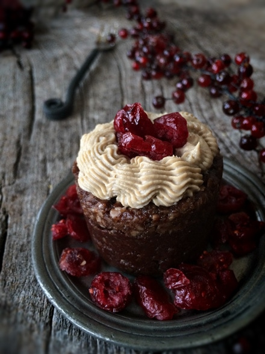
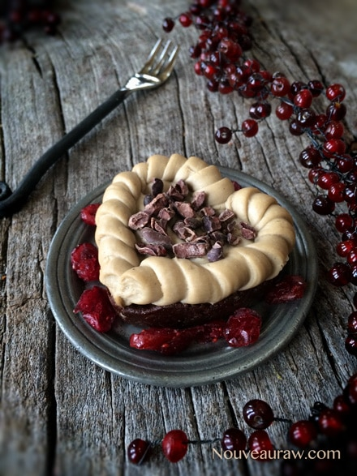
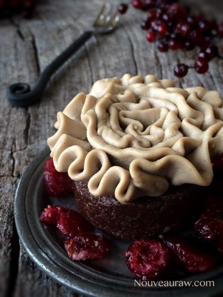
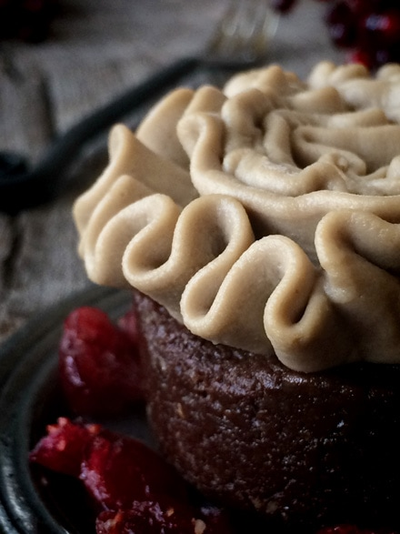
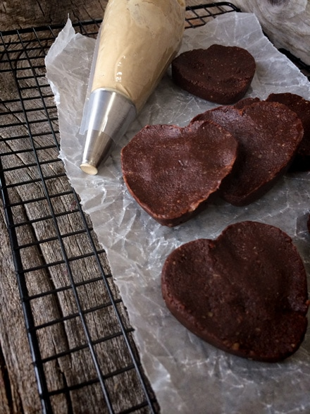
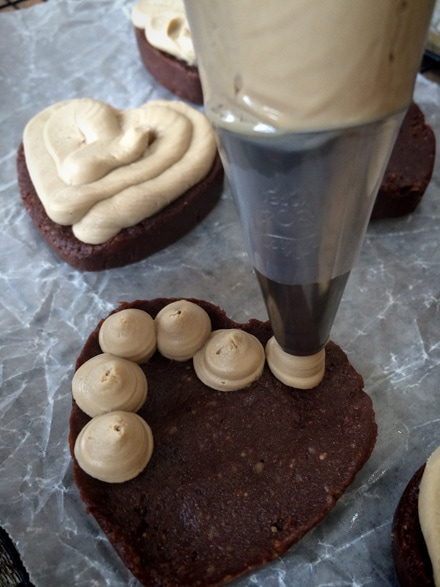
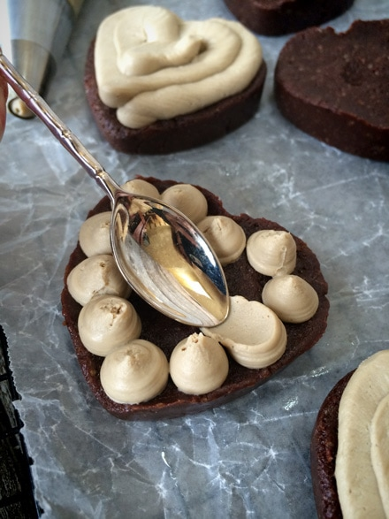
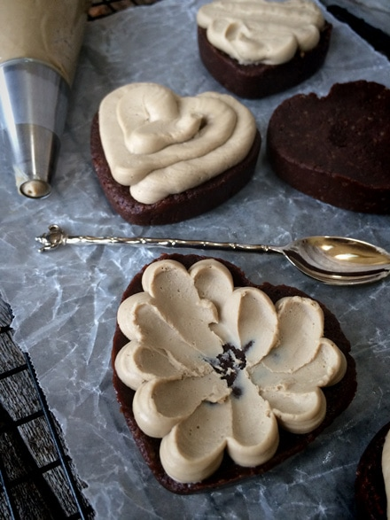
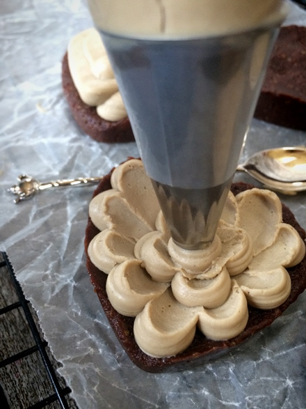

Hot and Spicy Mocha Brownies

~ raw, vegan, gluten-free ~
When it comes to decorating, I really want to encourage you to have some fun. I don’t have any pastry chef experience under my belt, but I am not afraid to play around and see what works and what doesn’t work. What works you see pictures of, what doesn’t work gets eaten. Lol I don’t see a fail anywhere in that, do you?
But seriously, invest in a set of piping tips, some disposable bags, make a few of my frosting recipes (which hold up wonderfully to cake decorating), and have fun! Just make sure that you have enough time to sit down (or stand, I work the best standing), so you can enjoy yourself.
No matter how your treat ends up looking, it will taste amazing. And those who get to enjoy the deliciousness will be touched by the love that you have put into it.
Piping Tips
When filling the piping bag, squeeze the icing down into the bag, aiming to eliminate air pockets, which can interrupt piping patterns. Twist the excess at the top of the bag.
Make sure that the frosting is at the right temperature. I usually take it out of the fridge and let it sit on the counter for about 1-2 hours. Keep checking on it since your house may not be as warm or cool as mine. If the frosting gets too soft, return to the fridge for a bit. You want it to flow freely from the piping bag as you apply pressure. If you haven’t added any pressure and it is oozing out, that is not a good sign. Return to the fridge. :)
If you don’t use my frosting recipe, just make sure that you know the frosting that you are using. Not all raw frostings can stand up to room temperature. Keep the tip clean. Each time you lift the tip after piping, wipe the frosting from it, so it doesn’t smudge up your next masterpiece!
Ingredients:
Yield depends on the molds used
Brownie:
- 2 cups packed Medjool dates, pitted
- 2 cups raw walnuts, soaked & dehydrated
- 1/2 cup raw cacao powder
- 1/4 cup raw mesquite powder
- 1 Tbsp espresso powder
- 1/2 tsp Himalayan pink salt
- 1/4-1/2 tsp cayenne pepper
- 2 Tbsp cold-pressed coconut oil, melted
Frosting: yields 2 1/2 cups
- 1 cup cashews, soaked
- 3/4 cups thick coconut milk, fresh or canned
- 1/4 cup maple syrup
- 1 Tbsp vanilla extract
- 1 Tbsp instant espresso powder
- 1/8 tsp Himalayan pink salt
- 1/2 cup cold-pressed coconut oil, melted
- 1 1/2 Tbsp lecithin powder or liquid
Preparation:
Brownie:
- Remove the pits from the dates and cover with enough warm water to soften. Do this while you put the rest of the recipe together. When you are ready to add them to the recipe, drain the soak water, and hand-squeeze the excess water out.
- Place the walnuts in the food processor, fitted with the “S” blade, and process until they get to a small mealy stage. Don’t over-process them, or they will start to release too much of their natural oils.
- Stop the machine and add the cacao powder, mesquite, espresso, salt, and cayenne. Pulse together until well mixed. Again, don’t over-process.
- Stop the machine and scatter the dates around the bowl. Drizzle the coconut oil on top. Replace the lid and pulse together until the dough starts to gather into a ball shape. Now it is ready to press into the desired shape/pan.
Frosting:
- After soaking the cashews, drain and rinse them thoroughly. Set aside.
- In a high-speed blender combine in order; coconut milk, maple syrup, vanilla, espresso powder, salt, and cashews. By placing the liquids in first, it helps the blades spin more easily. Blend until creamy, and don’t feel any grit in the frosting. Depending on the blender, this may take anywhere from 1-5 minutes.
- While the blender is running and a vortex is in motion, drizzle in the coconut oil. Make sure that it gets well incorporated.
- Now add the lecithin and process just until mixed in. I don’t recommend skipping this ingredient; it helps keep it firm.
- Place the frosting in an airtight container and place in the fridge for 2-4 hours to firm.
- The shelf-life is roughly 3-5 days.
Assembly:
- I created heart-shaped and small cake based brownies. You can shape them into any form you desire.
- After forming the brownies, place them in the freezer for a few hours to firm up. When frozen, they will be easier to decorate.
- For toppings, I used raw cacao nibs and dried cranberries. Again, be as creative as your pantry allows. :)
- For the frosting play, have fun, experiment with the different piping tips that you have. See the photos below for some ideas.
- Store the completed brownies in an airtight container for up to 5 days. This short life span is due to the frosting. Unfrosted brownies will keep for weeks in the fridge — months in the freezer.
The Institute of Culinary Ingredients™
- To learn more about maple syrup by clicking (here).
- What is raw cacao powder?
- What is Himalayan pink salt, and does it matter? Click (here) to read more about it.
- Is coconut butter the same as coconut oil? Click (here) to find out.
- Why I use lecithin – click (here) to read about it.

For this look, I used the typical round piping tip.


Look how velvety rich looking that frosting is. :)






Can you believe that someone broke into my house and ate the completed
brownie before I snapped a photo! Ok, not really, but someone did eat it
before I managed to get a picture. Sigh… lol But I think you get the idea.
© AmieSue.com